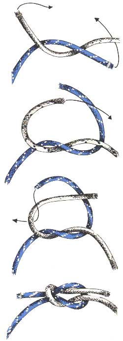

Platte Knoop
Gebruik
Deze knoop wordt heel vaak gebruikt om twee tampen (= uiteinden) aan elkaar te bevestigen, maar dan enkel bij touwen van gelijke dikte. Als hij klaar is, is hij behoorlijk sterk, aangezien hij zichzelf aantrekt naarmate hij meer onder druk komt te staan. Soms kan het wel enige moeite kosten hem weer los te krijgen, wanneer het gebruikte touw dun is of als de tamp bij het knopen nat was en er veel druk op de knoop heeft gestaan. Beginnelingen maken de platte knoop vaak omgekeerd en dan kan hij nogal last opleveren. Let bij het maken ervan vooral op de symmetrie. Hij bestaat uit twee op elkaar liggende halve knopen, waarbij de tweede in spiegelbeeld wordt uitgevoerd.
Methode
Van elk van beide trossen die vast moeten worden gemaakt gebruikt men een tamp en legt er een halve knoop in. Op deze eerste halve knoop wordt een tweede gelegd waarbij erop gelet moet worden dat de tampen omgekeerd worden vastgenomen, ofwel, als men bij de eerste halve knoop de rechtertamp onder de linkse door heeft gelegd, dat men dan bij de tweede halve knoop de linkertamp (die eerst rechts was) onder de rechtse doorlegt. (Rechts over rechts, links over links). Voor het aantrekken van de knoop moet er aan beide tampen getrokken worden.
